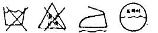

세탁기능사 (2004-07-18 기출문제)
1과목: 세정이론
1. 다음 중 고체 오점에 해당하는 것은?
- 유지
- 지방산
- 철분
- 광물성 유분
(정답률: 80%)

2. 다음중에서 유용성 오염이 아닌 것은?
- 식용유
- 피지
- 기계유
- 곰팡이
(정답률: 78%)
3. 다음의 섬유 중 가장 오염이 되기 쉬운 것은?
- 면
- 나일론
- 양모
- 레이온
(정답률: 74%)
4. 오점이 잘 제거되는 섬유의 순서가 옳은 것은?
- 비닐론-나일론-양모-면-아세테이트
- 양모-나일론-비닐론-아세테이트-면
- 나일론-비닐론-면-양모-아세테이트
- 면-아세테이트-비닐론-나일론-양모
(정답률: 89%)
5. 석유계 용제를 사용한 세탁물의 세정에서 세정시작 후 얼마가 경과하면 재오염이 되는가?
- 30초
- 1분
- 2-3분
- 3-5분
(정답률: 72%)
6. 불소계 용제의 특징을 설명한 것 중 잘못된 것은?
- 불연성이며 독성과 세정력이 약하다.
- 용제가 고가이며 단열성이 높은 기계장치가 필요하다.
- 매회마다 증류가 용이하며 용제관리가 쉽다.
- 용해력이 강하고 비점이 높아 고온 건조가 요구된다.
(정답률: 53%)
7. 드라이클리닝에서 가장 적정한 용제의 관계습도는?
- 20-30(%)
- 30-45(%)
- 50-60(%)
- 70-75(%)
(정답률: 61%)
8. 용해성 오염물질이 포함된 세정액을 청정화할 때 성능이 가장 우수한 장치는?
- 증류장치
- 필터
- 청정통
- 카트리지
(정답률: 64%)
9. 다음 중 여과제로 사용되는 탈색제가 아닌 것은?
- 활성탄소
- 경질토
- 산성백토
- 활성백토
(정답률: 74%)
10. 필터의 망에 규조토등의 분말을 부착시켜 세정액을 통과시켜 용제를 청정화 하는 방법을 무엇이라고 하는가 ?
- 탈수방법
- 증류방법
- 여과방법
- 흡착방법
(정답률: 66%)
11. 직물이 습윤과 침투에 저항하는 성능을 부여하는 가공 방법은?
- 방오가공
- 방수가공
- 방염가공
- 방미가공
(정답률: 75%)
12. 소프의 가공제 배합에 쓰이는 물질이 아닌 것은?
- 유연제
- 형광증백제
- 무연제
- 대전방지제
(정답률: 52%)
13. 보일러의 압력을 급격하게 올려서는 안되는 이유로 가장 적당한 것은?
- 보일러내의 물의 순환을 해친다.
- 압력계를 파손한다.
- 보일러 효율을 저하시킨다.
- 보일러에 악영향을 주고 파괴의 원인이 된다.
(정답률: 70%)
14. 계면활성제의 H.L.B 와 그 용도가 잘못 짝지어진 것은?
- HLB 1 -3 : 소포제
- HLB 3 -4 : 드라이클리닝용 세제
- HLB 13 -15 : 세탁용 세제
- HLB 4 -13 : 형광 증백제
(정답률: 71%)
15. 클리닝의 공정 중 얼룩빼기에서 가장 맞지 않는 것은?
- 론드리, 웨트클리닝에서의 얼룩빼기는 표백제와 얼룩 빼기제를 사용한다.
- 지워지지 않는 얼룩은 불용성 얼룩으로 남겨둔다.
- 드라이클리닝에서는 전처리후에 클리닝을 한다.
- 드라이클리닝 후에는 스팀건에 의해 스폿팅한다.
(정답률: 60%)
16. 재오염의 원인에는 부착, 흡착, 염착에 의한 재오염이 있다. 그 중 흡착에 의한 재오염과 상관이 먼 것은?
- 세정액 중에 잔존해 있는 염료가 섬유에 흡착하는 경우이다.
- 용제중의 더러움이 정전기 등의 인력과 섬유표면의 점착력 등에 의하여 섬유에 부착되는 오염이다.
- 흡착에 의한 오염은 정전기, 점착, 물의 적심 등의 3가지로 구분할 수 있다.
- 용제로 헹구어도 제거가 어려운 경우가 많다.
(정답률: 36%)
17. 다음 중 세탁이 잘 되며 수질오염의 우려가 가장 적고, 현재 사용되는 대부분의 합성세제는?
- LAS 계 합성세제
- ABS 계 합성세제
- 지방산나트륨 비누
- AES 계 합성세제
(정답률: 78%)
18. 게이지의 압력이 6㎏/㎝2인 보일러의 압력을 절대압력(㎏/㎝2)으로 계산하면 얼마인가?
- 4
- 5
- 6
- 7
(정답률: 85%)
19. 세탁물의 접수점검 시 진단해야 될 사항과 가장 거리가 먼 것은?
- 카운터에서 고객과 함께 진단 처방지에 주의점을 기입한다.
- 얼룩, 변색, 흠, 형태 변화 등과 클리닝의 대상 여부를 판별한다.
- 세탁물의 본체와 부속품을 체크하고 세탁방법을 분류 한다.
- 얼룩의 종류와 부착시기, 그리고 세탁물에 대한 정보를 알아 본다.
(정답률: 54%)
20. 다음 중 사무진단 포인트가 아닌 것은?
- 물품의 종류
- 물품의 수량
- 물품의 색상
- 마모
(정답률: 77%)
2과목: 기술관리
21. 다음 중 옳지 않은 설명은?
- 세탁은 의류에서 오염과 세균을 제거, 의류의 통기성을 좋게 하고 의복의 피로를 회복시킨다.
- 클리닝(상업세탁)에서는 론드링, 웨트클리닝, 드라이 클리닝을 하고 있다.
- 론드링은 와셔(대형세탁기)에 물 또는 온수와 세제를 넣어 세탁하는 방법이다.
- 드라이클리닝은 유용성 오염뿐만 아니라 수용성 오염도 잘 제거된다.
(정답률: 57%)
22. 다음 중 가정에서의 손빨래와 같은 종류의 세탁법은?
- 상업세탁
- 드라이클리닝
- 웨트클리닝
- 재염색법
(정답률: 75%)
23. 클리닝 사고를 예방하기 위해서는 클리닝의 공정순서가 필요한데 다음 중 관계가 적은 것은?
- 클리닝 공정순서는 대단히 중요하다.
- 클리닝 공정순서에서 진단기술과 확인검사 또한 중요하다.
- 접수(고객)시 영수증의 확인 필요없이 주문받아도 괜찮다.
- ①고객 ②접수확인 ③꼬리표(마킹)부착 ④포켓청소 ⑤분류(진단) ⑥전처리 ⑦기계작동 ⑧헹굼 ⑨탈수 ⑩후처리 ⑪건조 ⑫아이론 ⑬검사 ⑭포장
(정답률: 79%)
24. 드라이클리닝 시 사고발생 내용이 아닌 것은?
- 형태변화
- 변퇴색
- 탈색
- 이염
(정답률: 46%)
25. 웨트클리닝의 사고를 방지할 수 있는 제일 중요한 점은?
- 경험자에게 물어본다.
- 고객과 의견을 교환한다.
- 천이 상하지 않도록 약한 용제를 먼저 쓴다.
- 내웨트클리닝성 시험을 거치는 일이다.
(정답률: 61%)
26. 바지에 대한 설명 중 옳지 않는 것은?
- 개어놓은 바지를 펼쳐서 세탁액에 담가 전체를 눌려 빤다.
- 오점이 심한 부분은 오점 처리를 한 다음 손빨래를 한다.
- 탈수기에는 여유를 갖게끔 넣는다.
- 건조는 뒤집어서 양지에서 자연 건조한다.
(정답률: 50%)
27. 웨트클리닝 대상품이 아닌 것은?
- 합성수지 제품
- 고무를 입힌 제품
- 수지안료 가공제품
- 드라이클리닝이 가능한 제품
(정답률: 77%)
28. 론드리의 장점에 대해 설명한 것 중 맞지 않는 것은?
- 세탁온도가 높아 세탁효과가 좋다.
- 알칼리제를 사용하므로 오점이 잘 빠진다.
- 표백이나 풀먹임이 효과적이며 용이하다.
- 마무리에 상당한 시간과 기술이 필요하다.
(정답률: 61%)
29. 유성오점을 제거하는데 쓰이는 용제로서 가장 상관이 적은 것은?
- 아세톤
- 초산
- 알콜
- 황산
(정답률: 38%)
30. 다음 섬유 중 오점을 가장 빼기 어려운 것은?
- 나일론
- 면
- 견
- 아크릴
(정답률: 73%)
31. 모터와 콤프레서에 가장 많이 사용되는 동력원은?
- 휘발유
- 석탄
- 가스
- 전기
(정답률: 86%)
32. 드라이 마무리 건조상태에서 조절하여야 할 조건이 아닌 것은?
- 적외선
- 진공
- 압력
- 온도
(정답률: 66%)
33. 세탁통 가운데 봉이 솟아 있어 세탁물의 엉킴을 방지해주는 방식의 세탁기는?
- 와류식
- 교반식
- 회전드럼식
- 샤워식
(정답률: 65%)
34. 산욕 시 주의점으로 알맞은 것은?
- 온도를 올리면 산의 작용이 상승하므로 온도를 많이 올려야 한다.
- 어떤 섬유든지 구분할 필요없이 산을 사용한다.
- 산욕제로는 표백분을 사용하여 황변을 방지한다.
- 산을 넣을 때 직접 천에 닿지 않도록 한다.
(정답률: 58%)
35. 세탁업의 경영 본질과 관계 없는 것은?
- 파손부분을 수선해 준다.
- 의복의 착용성을 회복 재생한다.
- 오점을 제거하여 위생 수준을 향상시킨다.
- 현금장사이므로 수지를 맞출 수 있다.
(정답률: 78%)
36. 파일직물에 속하지 않는 것은?
- 우단
- 벨벳
- 타월
- 갑사
(정답률: 64%)
37. 직물의 삼원조직이 아닌 것은?
- 평직
- 주자직
- 능직
- 문직
(정답률: 79%)
38. 침구류 및 장식품에 대한 설명이다. 틀린 것은?
- 침구류라 하면 요, 이불, 베개, 모포, 침대 등을 말한다.
- 침구류는 인체와 직접 접촉되는 것이기 때문에 대부분 드라이클리닝 하여야 위생적인 생활을 할 수 있다.
- 커어튼, 응접셋트, 커버, 테이블보 및 각종 수예품등을 실내 장식품이라 한다.
- 견직물로 된 침구류는 드라이클리닝 한다.
(정답률: 70%)
39. 섬유의 분류 중 서로 상관이 먼 것은?
- 무명
- 대마
- 아마
- 모시
(정답률: 75%)
40. 다음 천연 섬유 중 필라멘트사가 될 수 있는 것은?
- 면
- 견
- 마
- 모
(정답률: 80%)
3과목: 클리닝대상품
41. 다음중에서 산, 알칼리에 비교적 강한 섬유는?
- 식물성 섬유
- 재생 섬유
- 동물성 섬유
- 합성 섬유
(정답률: 61%)
42. 속옷의 재료로써 가장 중요한 성질은?
- 흡습성
- 염색성
- 내열성
- 열가소성
(정답률: 58%)
43. 다음 중 다리미 온도를 가장 낮게 하여야 하는 섬유는?
- 견, 모
- 면, 마
- 폴리프로필렌계섬유
- 레이온
(정답률: 66%)
44. 섬유에 따른 염료의 선택이 부적당한 것은?
- 염기성 염료-아크릴 섬유
- 산성 염료-양모
- 직접 염료-아세테이트
- 분산 염료-폴리에스테르
(정답률: 73%)
45. 실의 품질을 표시하는 기준 항목으로만 되어 있는 것은?
- 섬유의 혼용율, 실의 번수
- 섬유의 혼용율, 섬유의 지름
- 섬유의 혼용율, 폭
- 섬유의 혼용율, 치수 또는 호수
(정답률: 79%)
46. 다음 중 복합천이 아닌 단일천은?
- 퀼트천
- 본딩직물
- 이중직
- 인조피혁
(정답률: 42%)
47. 다음 중 재생 섬유가 아닌 것은?
- 레이온
- 큐프라
- 폴리노직
- 나일론
(정답률: 49%)
48. 피복재료용 섬유의 성질 중 가장 적당한 것은?
- 흡습성이 적은 섬유는 내의용으로 적당하다.
- 일정한 강신도는 없어도 섬유장은 길어야 한다.
- 나일론은 강도가 적어 내의용으로 적당하다.
- 아크릴 섬유는 벌커성이 있어 보온성이 좋다.
(정답률: 69%)
49. 면직물에 사용되는 염료 중 염색 견뢰도가 가장 우수한 것은?
- 배트 염료
- 직접 염료
- 산성 염료
- 반응성 염료
(정답률: 42%)
50. 폴리에스테르계 섬유에 주로 사용되는 염료는?
- 반응성 염료
- 황화 염료
- 직접 염료
- 분산 염료
(정답률: 79%)
51. 폴리에스테르 섬유의 성질을 바르게 설명한 것은?
- 내구성이 아크릴보다는 강하고 나일론 보다는 적다.
- 신장 회복률이 좋아 주름이 잘 간다.
- 흡습성이 커서 세탁을 하면 쉽게 잘 줄어든다.
- 대부분의 염료에 의해 쉽게 염색이 잘 된다.
(정답률: 61%)
52. 그림과 같은 섬유 상품 취급표시 기호를 하는 의류 제품은?

- 면 코트류
- 모 신사복
- 면 아동복
- 면 스커어트
(정답률: 68%)
53. 세로방향의 실(경사)과 가로방향의 실(위사)이 직각으로 교차하여 이루어진 형태는?
- 경편물
- 위편물
- 직물
- 부직포
(정답률: 79%)
54. 평조직 직물의 특징을 설명한 것은?
- 직물의 겉면과 뒷면에 사문선이 나타난다.
- 다른 조직 직물에 비하여 마찰에는 약하지만 광택은 우수하다.
- 날실과 씨실의 굴곡이 가장 많으며, 직축률이 가장 크다.
- 기본조직의 구성 올 수는 최소한 3올이다.
(정답률: 45%)
55. 단추는 의류의 소재나 디자인에 어울리는 모양 색깔 등을 선택함으로써 의류의 조형 기능이나 착용 기능을 높일 수 있는데 다음중에서 단추가 갖추어야 할 기능과 가장 거리가 먼 것은?
- 가볍고 내충격성이 커야 한다.
- 세탁에 의하여 색이나 광택이 변하지 않아야 한다.
- 재단, 봉제 공정 시 나쁜 영향을 주지 않아야 한다.
- 다림질에 의하여 녹거나 변색되지 않아야 한다.
(정답률: 53%)
4과목: 공중위생법규
56. 다음 중 공중위생 감시원을 임명하는 자가 아닌 것은?
- 도지사
- 관련단체장
- 광역시장
- 구청장
(정답률: 61%)
57. 세탁업자가 영업정지 처분을 받고도 영업을 계속한 경우의 행정처분 기준은?
- 영업정지 5일
- 경고
- 영업장 폐쇄명령
- 개선명령
(정답률: 71%)
58. 다음 중 신고 업종이 아닌 것은?
- 목욕장업
- 숙박업
- 전자유기장업
- 세탁업
(정답률: 72%)
59. 끝손질만 하는 세탁업소는 어떤 작업만 하는 업소를 말하는가?
- 세탁
- 드라이클리닝
- 짜깁기
- 다리미질
(정답률: 61%)
60. 공중위생 영업자가 준수하여야 하는 위생관리 기준에 해당하지 않은 것은?
- 드라이클리닝용 세탁기는 유기용제의 유출이 없도록 항상 점검하여야 한다.
- 세탁물에는 세탁물의 처리에 사용된 세제, 유기용제 또는 얼룩제거 약제가 남지 아니하도록 하여야 한다.
- 영업자의 개인 위생을 철저히 하여야 한다.
- 세탁업자는 업소에 보관중인 세탁물에 좀이나 곰팡이 등이 생성되지 않도록 위생적으로 관리하여야 한다.
(정답률: 73%)